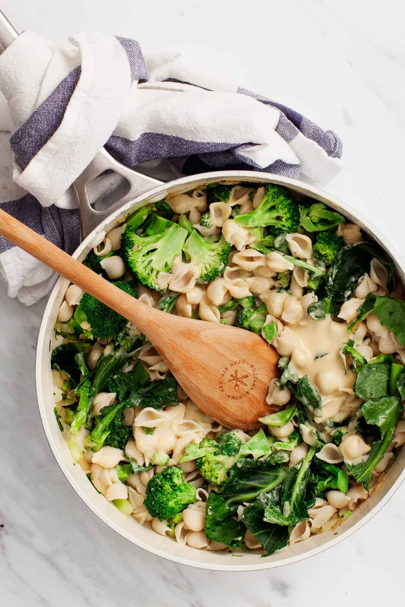

Creamy Vegan Pasta

Description
Ingredients
- White beans
- Lemon juice
- Olive oil
- Nutritional yeast
- Onion powder
- Vegetable broth
- Pasta
- Broccoli
- Pine nuts
Instructions
- Make the sauce: In a blender, combine the white beans, broth, lemon juice, olive oil, nutritional yeast, garlic, onion powder, salt, and pepper, and blend until smooth. Set aside.
- Bring a large pot of salted water to a boil. Prepare the pasta according to the instructions on the package, cooking until al dente. Drain and set aside.
- Heat 1 tablespoon of olive oil in a large skillet over medium heat. Add the onion and sauté until soft, about 5 minutes.
- Stir in the chopped broccoli stems and cook for another 3 to 5 minutes or until tender. Add the broccoli florets and leaves and a splash of water or vegetable broth. Cover and turn off the heat.
- Allow the broccoli to steam for 2 to 3 minutes or until tender but still bright green. Add the pasta, then stir in ¾ of the sauce, adding more broth if the sauce is too dry.
- Season to taste with more salt, pepper and lemon juice, as desired, and portion into bowls. Divide the remaining sauce onto each bowl. Top with the pine nuts and serve with lemon wedges on the side.